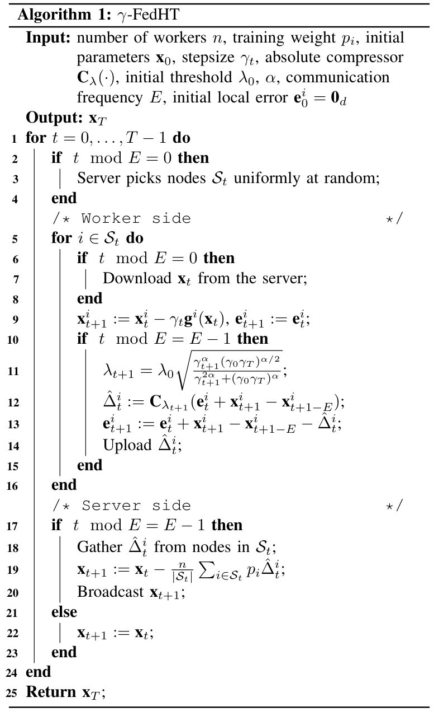
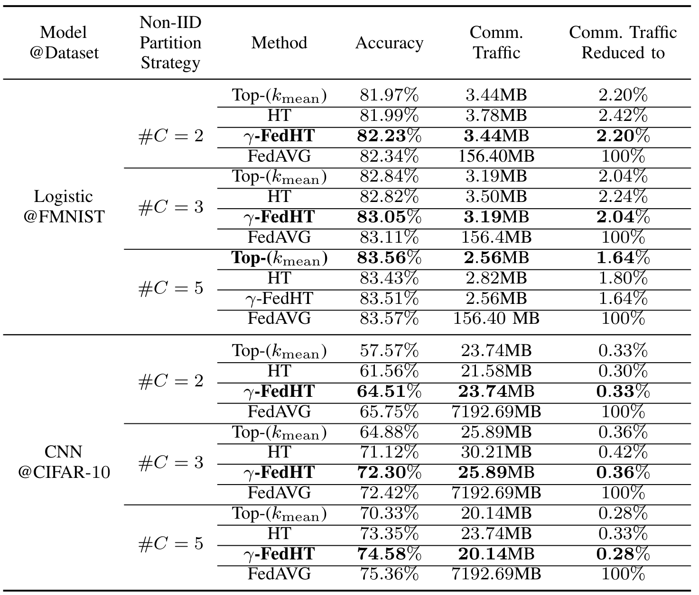

$\gamma$-FedHT: Stepsize-Aware Hard-Threshold Gradient
Compression in Federated Learning
INFOCOM 2025
- Rongwei Lu
- Yutong Jiang
- Jinrui Zhang
- Chunyang Li
- Yifei Zhu
- Bin Chen
- Zhi Wang
Tsinghua University, Harbin Institute of Technology, Shanghai Jiao Tong University
Abstract
Gradient compression can effectively alleviate communication bottlenecks in Federated Learning (FL). Contemporary state-of-the-art sparse compressors, such as Top-$k$, exhibit high computational complexity, up to $\mathcal{O}(d\log_2{k})$, where d is the number of model parameters. The hard-threshold compressor, which simply transmits elements with absolute values higher than a fixed threshold, is thus proposed to reduce the complexity to $\mathcal{O}(d)$. However, the hard-threshold compression causes accuracy degradation in FL, where the datasets are non-IID and the stepsize $\gamma$ is decreasing for model convergence. The decaying stepsize reduces the updates and causes the compression ratio of the hard-threshold compression to drop rapidly to an aggressive ratio. At or below this ratio, the model accuracy has been observed to degrade severely. To address this, we propose $\gamma$-FedHT, a stepsize-aware low-cost compressor with Error-Feedback to guarantee convergence. Given that the traditional theoretical framework of FL does not consider Error-Feedback, we introduce the fundamental conversation of Error-Feedback. We prove that $\gamma$-FedHT has the convergence rate of $\mathcal{O}(\frac{1}{T})$ ($T$ representing total training iterations) under μ-strongly convex cases and $\mathcal{O}(\frac{1}{\sqrt{T}})$ under non-convex cases, same as FedAVG. Extensive experiments demonstrate that $\gamma$-FedHT improves accuracy by up to 7.42% over Top-$k$ under equal communication traffic on various non-IID image datasets.
Method
|  |
$\gamma$-FedHT is a stepsize-aware hard-threshold compressor with vanilla EF, avoiding the accelerator-unfriendly operations like Top-$k$ selection, and inheriting the low-cost property. To improve the performance, the threshold should satisfy the increasing and then decreasing monotonicity with a limit of zero. Combining two simple functions, the inverse proportional function and the logarithmic function, the adaptive threshold can satisfy the two mathematical properties without introducing more hyperparameters. Although there have been efforts to theoretically validate gradient compression algorithms in FL, these works have not considered EF, which is important and necessary for sparsification compression. To derive the convergence rate of our design, we solve the problem of how to integrate gradient compression with EF into the theoretical framework of FL. We fuse the mathematical description of EF into the framework and establish an iterative equation. Based on this, we derive the convergence rates. The convergence rates of $\gamma$-FedHT are $\mathcal{O}(\frac{1}{T})$ under μ-strongly convex functions and $\mathcal{O}(\frac{1}{\sqrt{T}})$ under non-convex functions, the same rate as FedAVG without compression.
Contribution
1) We are the first to reveal that the model trained with the hard-threshold compression converges less effectively than the one trained with Top-$k$ compressor by the controlled variable method. We use a full factorial experimental design to demonstrate that it is the combination of the decaying stepsize and non-IID scenarios that contributes to the failure of the hard-threshold compression in FL.
2) We propose $\gamma$-FedHT, the first sparsification compressor in FL with a time complexity of $\mathcal{O}(d)$ and the same convergence rate as vanilla FedAVG. We expand the application of the traditional FL theoretical framework and derive the convergence rate of FedAVG with gradient compression and EF, based on introducing the iterative equation of EF.
3) We apply $\gamma$-FedHT to both real-world non-IID and artificially partitioned non-IID datasets, including convex cases (e.g. Logistic) and non-convex cases (e.g. VGG, CNN and GPT2). The experimental results validate the great compression-accuracy trade-offs of our design. Under equal traffic communication, $\gamma$-FedHT can improve accuracy by up to 7.42% over Top-$k$ on the CNN model with non-IID datasets.
Evaluation Experiments
|  |
Accuracy and communication traffic of different gradient compression algorithms under different non-IID partition strategies. The results show that $\gamma$-FedHT outperforms other sparsifiers under both non-convex and convex cases especially when the communication is restricted and the non-IID problem is extremely severe.